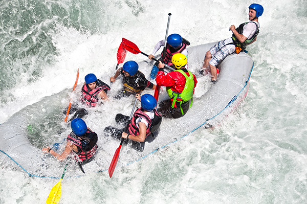
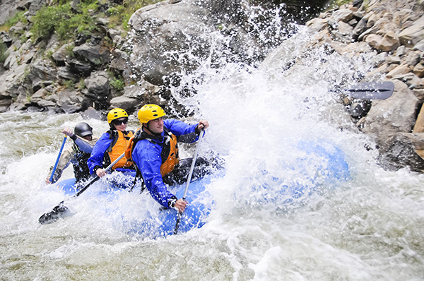
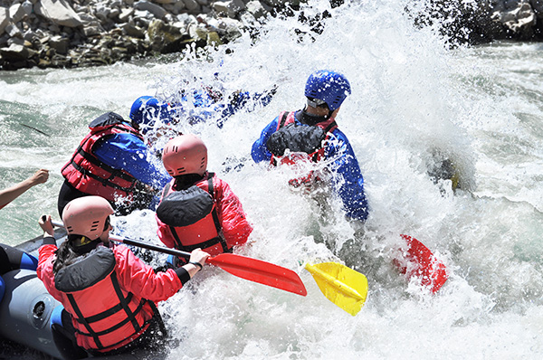
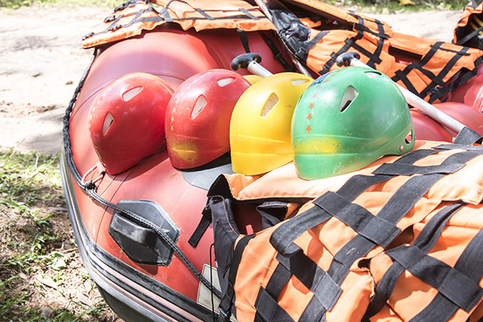

At White Water Rafting, our mission is to turn rivers into memories. We believe every rapid tells a story, and we're here to help you write yours — one paddle stroke at a time.

At White Water Rafting, our mission is to turn rivers into memories. We believe every rapid tells a story, and we're here to help you write yours — one paddle stroke at a time.
Founded on the banks of a nameless river by a small group of paddling enthusiasts, White Water Rafting began as a weekend hobby and grew into a full-fledged adventure company. Over the years, we've guided countless guests through rapids of every size, building a reputation for safety, fun, and unforgettable scenery along the way.




